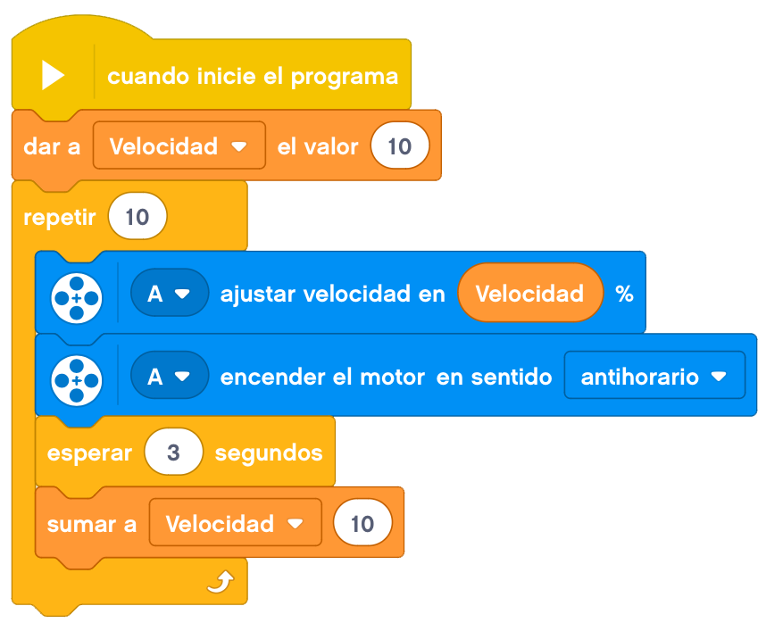

El proyecto de hoy se trata de montar un lanzador de aviones de papel.

Nuestro robot debe de ser capaz de lanzar un avión de papel al aire con la mayor fuerza posible.
Lo haremos multiplicando la velocidad del motor grande con engranajes. Recordemos que si unimos un engranaje
con muchos dientes (grande) a otro con pocos dientes (pequeño) la velocidad se multiplica.
A continuación, mostraremos un ejemplo de construcción de un lanza aviones.

Lo último que nos quedaría sería poner los cables necesarios.
A la hora de programarlo, tendremos que ir aumentando la velocidad poco a poco para que no se muevan los
engranajes ya que al incrementar la velocidad, los engranajes se pueden volver insetables si no los tenemos
bien sujetos.

Nuestro proyecto terminado funcionaría de la siguiente forma.